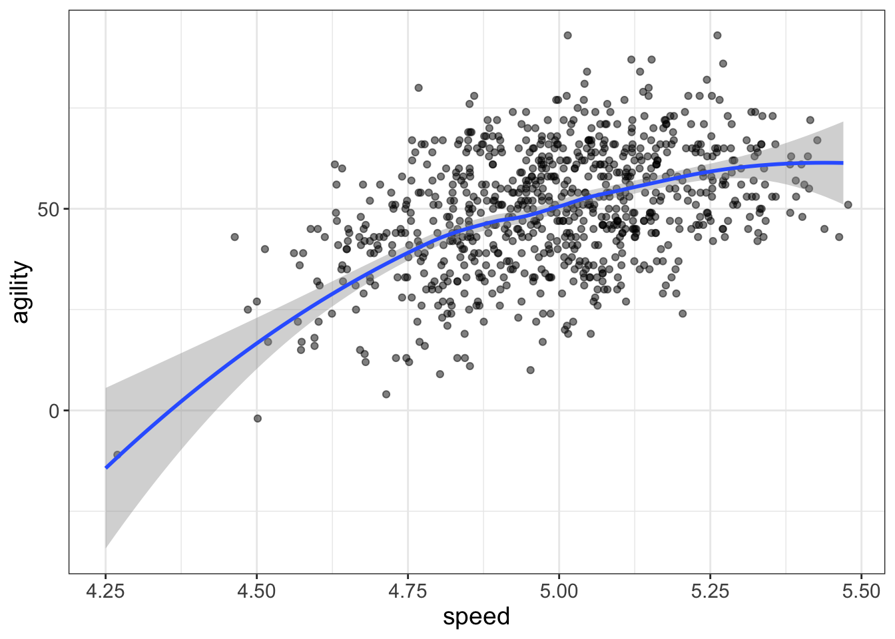
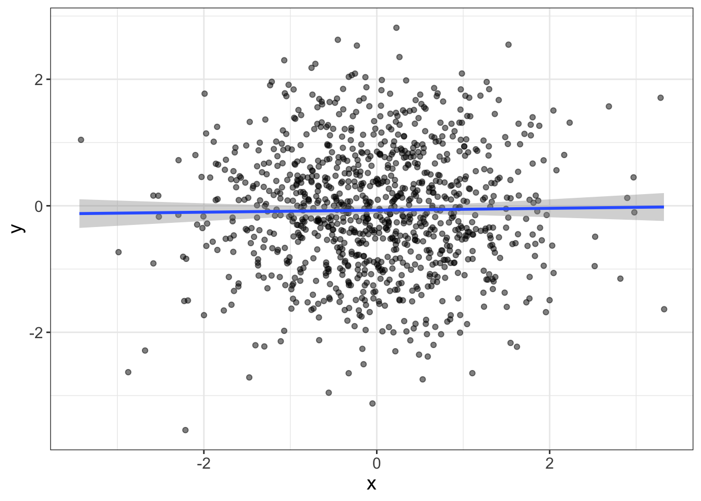
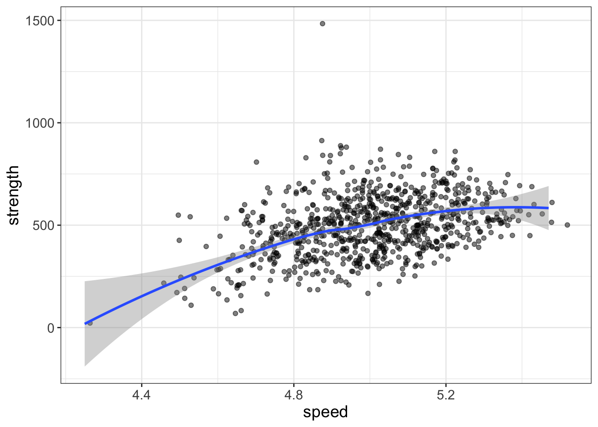
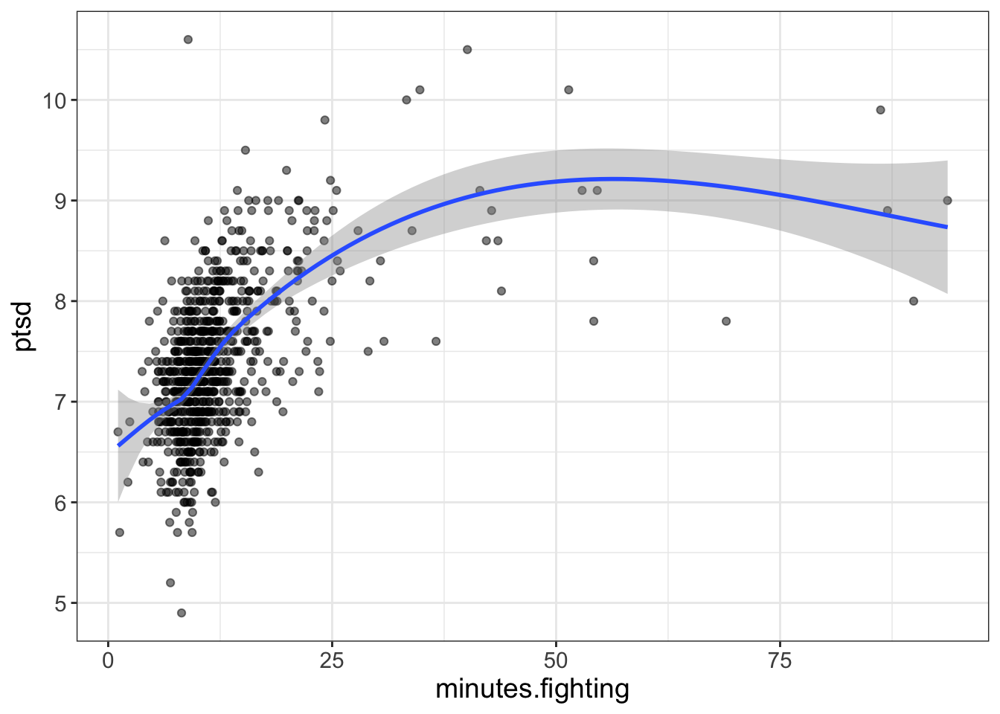
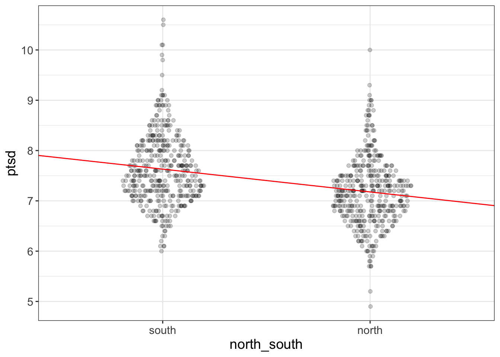
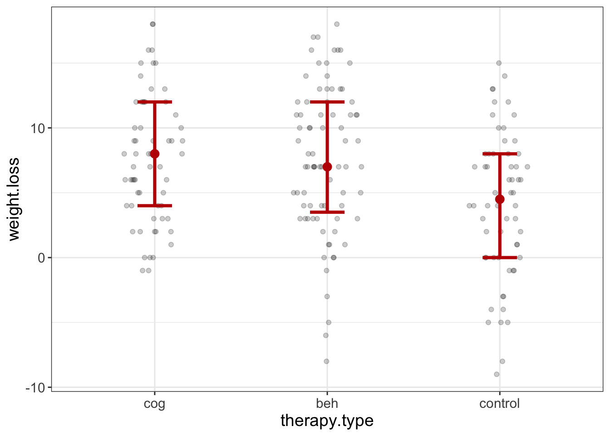
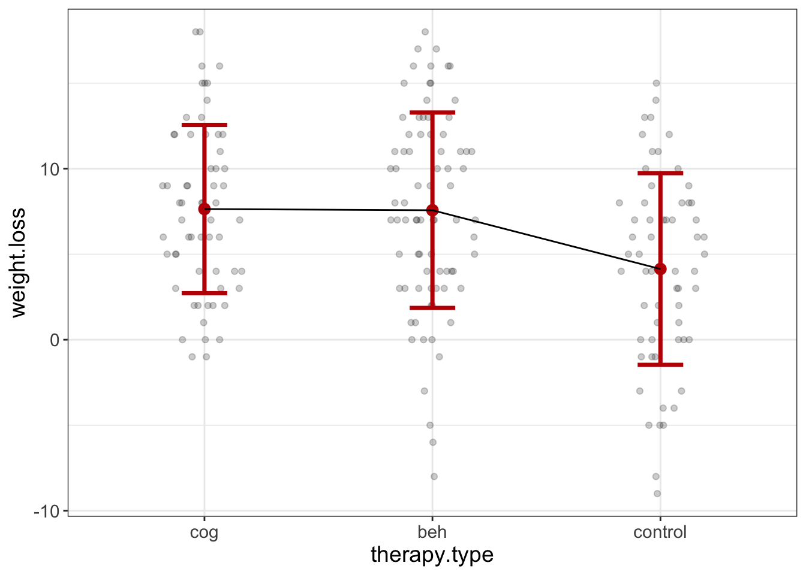
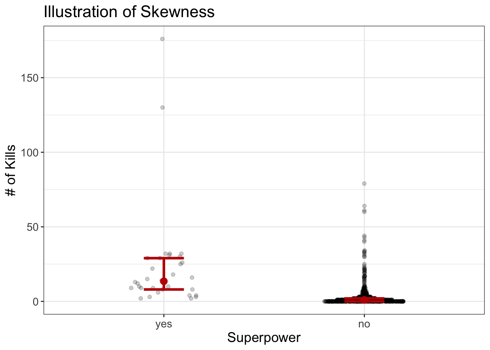

Bivariate Visualizations
After I graduated with my PhD, I worked for three years at the Oklahoma Medical Research Foundation (OMRF). I was the lead biostatistician of clinical research.
At OMRF, there was a gentleman by the name of Gabriel Pardo. The man was a big name in multiple sclerosis research and pulled in millions of dollars in grant money.
For years, we’d been trying to get him to utilize our statistical services. Finally, he invited me to perform the analysis for an upcoming conference submission.
He wanted to know whether there were differences in gait metrics for those who came to the clinic in person versus those who utilized telehealth.
There were two different metrics of gait (balance and wobble). But, the type of analysis I was going to do required me to format the data differently. Long story short, I wasn’t too careful in how I formatted the data and ended up mixing up the balance and wobble variables. The problem is that the two variables have very different scales (let’s say wobble had scores that range from 50-100, while balance ranges from 0-5). So, my analysis showed that all the participants had this very sudden jump of wobble scores from around 3 to 75! But it wasn’t because their wobble score improved, but because I’d just accidentally blended their wobble and balance scores.
But, I didn’t know that! Instead, I analyzed the data and computed some statistics. And these statistics showed impressive results. Therapy made a huge difference.
I reported this to Dr. Pardo and he was ecstatic.
“Write it up!” he said.
So I did.
The day of the submission, I received an email from his wife (who was a coauthor on the project). Her email began with, “Something about your analysis doesn’t make sense…”
When I saw those words, my chest tightened and my stomach sunk.
Oh no.
She then asked how some participants had wobble scores of 1 or 2 when the scale ranged from 50-100.
I then had the dreadful and horrific realization that I had screwed up big time. I knew I had screwed up and I knew why I had screwed up.
Frantically, I reanalyzed the data, correcting my mistake, pleading to the statistical gods that with a reanalysis, the conclusions would remain the same.
They did not.
So, I had to write a very uncomfortable email and explain to this new client how horrendously I had screwed up. And, because it was the day of the deadline, there was no time to salvage the project.
They missed their deadline because of me.
That one experience, perhaps more than any other, has shaped who I am as a statistician, because after that experience, I asked myself how I could ensure that sort of screw up would never happen again.
And the answer?
If only I had plotted it. I would have seen this very strange, too good to be true, jump in scores.
Fortunately, Dr. Pardo was quite magnanimous, forgave the error and hired me for the next job (but not without a cheeky admonition not to screw it up this time).
Let this be a lesson to you: never ever ever ever perform an analysis without visualizing it first. As Leland Wilkinson said, “…if you assess hypotheses without examining your data, you risk publishing nonsense”” (Wilkinson & Task Force on Statistical Inference, 1999, p. 597).
That brings me to my overall philosophy of data analysis. If you learn nothing else from me, remember this:
All statistical analyses are incomplete without a visualization
You hear me? Never complete a statistical analysis without first visualizing the statistical model.
Sometimes that’s easier said than done, but don’t worry. I’m here to guide you through, wary statistical traveler.
Fortunately, Flexplot makes this much easier than it used to be. In this chapter, I’m going to tell you how to visualize numeric on numeric relationships, categorical on numeric, categorical on categorical, and numeric on categorical. But you don’t have to remember what plot to use. Flexplot will automate the decision making for you.
So, without further ado….
Avengers Dataset
Before we begin, let me introduce the dataset we’re going to be working with. It’s called the avengers dataset and comes built in to the Flexplot package. To load the aveners dataset in flexplot, type:
For those following along with JASP or Jamovi, you’ll have to download the dataset from Github.
The avengers dataset is a simulated dataset containing information about the final avengers battle in the movie Endgame. The variables contained within the dataset are listed in the table below.
| Variable | Description |
|---|---|
| iq | Intelligence |
| agility | weighted scores on an obstacle course |
| speed | Speed in running the 40 meter dash |
| strength | Pounds lifted in a benchpress |
| damage.resistance | Amount of skin deflection (in mm) when slapped with a frozen fish |
| flexibility | Number of inches past their toes they can reach |
| willpower | Length of time they wait at a DMV for a driver's license |
| ptsd | Score on a Likert-scale PTSD questionnaire |
| north_south | whether the individual was assigned to fight on the north or south battlefield |
| died | Whether the person died at the final battle |
| kills | Number of enemies killed in the final battle |
| injuries | Number of injuries sustained. Anything more than 5 is marked as a 5 |
| minutes.fighting | Number of minutes spent fighting before dying or giving up |
| shots.taken | Number of shots (with a gun) or punches thrown at an enemy |
We’re going to use these to visualize different relationships. Sound like fun?
Visualizing bivariate relationships in R using Flexplot
Visualizing these relationships in flexplot couldn’t be easier. We can use the function flexplot. The basic format of the flexplot function is as follows:
flexplot(y~x, data=d)
The first variable (called y) will go on the \(Y\) axis, and the second variable will go on the \(X\) axis. We then specify the name of our dataset.
So, for the avengers dataset, we might look at the relationship between speed and agility as follows:
require(flexplot)
flexplot(agility~speed, data=avengers)
Easy peasy!
Throughout this chapter, I’ll scatter R examples throughout. I encourage you to follow along.
Visualizing bivariate relationships in JASP using Visual Modeling
Visualizing these relationships in JASP couldn’t be easier. As before, we’re going to use the Visual Modeling menu and the Flexplot option:

Then we simply specify which variable is our Dependent variable and which is our independent variable. For example, if we want to look at the relationship between speed and agility, we would set up the menus as follows:

Easy peasy!
Throughout this chapter, I’ll scatter JASP examples throughout. I encourage you to follow along.
Scatterplots: Numeric on numeric
Let’s say we’re interested in determining the relationship between PTSD and willpower. How do we visualize this? One simple thing we can do is plot the willpower variable on the X axis and the ptsd variable on the Y axis. We call this a “scatterplot.” Why? Because the datapoints look like they’re a bunch of marbles that have been scattered across a lovely table.
Let me walk you through how to do it real quick. In R:
flexplot(ptsd~willpower, data=avengers)And in JASP:

Regardless of which program we use, we’re going to get a plot that looks like the one below. (Actually, yours will look slightly different because I color-coded a dot to make my explanation easier):

So, what are we looking at? Each dot represents a person. Their location on the \(X\) axis represents their willpower score, and their location on the \(Y\) axis represents their ptsd score. For example, the red dot is a person who had a willpower score of about 65 and a ptsd score just below 5.
And the line? I’ll go into more detail later, but it’s called a loess line and it simply shows you the trend of the data. I like to think of the loess line like a boat, and the dots like the wake of a boat. The loess line does its best to pretend to be a boat the passes through the center of the dots (wake).
But putting all the scores on a graph, it makes it easier to see what’s going on.
What to look for
As with all statistics, we’re looking for a pattern. If there’s a pattern, we can use that information to make predictions, to make theoretical statements, to begin to consider interventions, etc.
But first, we have to have a pattern. How do we recognize a pattern?
First, let me show you what what no pattern looks like:

A plot with no pattern shows a flat line.
Yes, but what does it mean?
It means that as you increase in one variable, there isn’t really a detectable increase in the other variable.
Here’s some examples of variables I would expect have no relationship:
- One’s shoe size and their score on World of Warcraft
- One’s liking of confetti and their weight
- How often one exercises and how many books they’ve read
On the other hand, sometimes we have a positive relationship, like the plot below:

This tells us that those people who tend to score high on \(X\) also tend to score high on \(Y\).
Here’s some examples of positive relationships:
- The relationship between height and weight
- The relationship between vocabulary and intelligence
- The relationship between income and number of cars you own
But we can also have negative relationships. WHen we have a negative relationship, that means one of our variables decreases while the other variable increases. For example:

Once again, we have a pattern: \(y\) scores tend to increase whenever \(X\) scores decrease (and vice versa).
Here’s some examples of negative relationships:
- Amount of money in one’s account and number of possessions one has (the more possessions you buy, presumably, the less you have in your account)
- Self-reported happiness and self-reported selfishness
- Depression and exercise
But we can have a very wide range of relationships. In the plots below, from left to right and top to bottom, we go from very negative to very positive (and everything in between):

Problems to look out for
Remember, my fine statistical friends, eventually we’re going to want to compress the information we see into a number, or an estimate. But, like in the last chapter, we recognize that these estimates may be misleading. Remember how with a skewed distribution, the mean was a bit misleading? Likewise, in the next chapter, we’re going to want to compute some estimates, but these estimates will be misleading if we see certain characteristics in our visuals.
What sort of problems are we looking for, you ask?
Good question, that. There are a few patterns that might cause problems: (1) nonlinear patterns, (2) outliers, and (3) heteroscedasticity.
Nonlinearity
Enough talk. Time to look at pictures!

This graph shows the relationship between speed and strength using the avengers dataset. Notice the loess line isn’t straight. Instead, it curves. Or, it’s non-LINE-ear.
Nonlinear means that the curve that best passes through the data (remember the boat analogy!) is not a straight line. Rather it’s a bent line.
Let’s look at another example with a more extreme bend to it, shall we?

Here we see the amount of PTSD of soldiers as a function of minutes.fighting for those who fought in the final avengers battle. Here we have a much more extreme nonlinearity; as minutes fighting increases, PTSD increases dramatically, then levels off.
Why are nonlinear relationships a problem? In the next chapter we’re going to introduce some estimates we can use to characteristize these visual relationships (e.g., correlation coefficient). All the estimates we’re going to mention in the next chapter assume a linear relationship. That means that if the relationship is nonlinear, these estimates don’t make any sense!
Bivariate Outliers
Another sort of visual anamoly that might screw things up is bivariate outliers. Remember a few chapters ago how we talked about outliers in histograms? These outliers were scores that were very far from the rest of the scores, kind of like that kid in elementary school that sat alone at the lunch table. (That may or may not have been me….)
Another way to conceptualize outliers is that they are scores that do not fit the pattern the rest of the datapoints follow. When we have bivariate outliers, that means a datapoint (or a small collection of datapoints) are loners, compared to the other datapoints. Let’s look at an example, shall we?

(#fig:bivariate_outlier_beforeaft)For larger datasets, outliers have a much smaller effect on the fitted line, i.e., the outliers are less influential.
Notice that datapoint in the top-left of the plot. That there is a loner datapoint. Poor fellar.
Remember how I said outliers can screw up our estimates (e.g., means). The line (which we call the regression line) is kinda sorta our bivariate version of the mean. The left plot shows the fitted line including the outlier, while the right plot shows the fitted line without the outlier. Those lines are quite different. The one that includes the outlier is trying to be inclusive and welcome that outlier.
How democratic.
The point, again, is that outliers can make our estimates less trustworthy. But not always!
Fortunately, outliers become less and less of an issue as our sample size increases. For example, take a look at the figure below. The left image shows the regression line that includes the outlier, while the right image shows the regression line that excludes the outlier. They’re not all that different, again because the sample size is so large.

As we see from the image above, not all outliers drastically affect the fitted line. Or, to put that in stats-ese, not all outliers have high influence on the fitted line. Generally, the larger the sample size, the smaller the influence outliers have on the regression line.
On the other hand, some datapoints are influential, meaning they drastically affect the fitted line.
Related to the idea of influential datapoints is high leverage datapoints.
A high leverage datapoint is a score that is an outlier on \(X\).
High leverage datapoints have extreme values, but they may or may not follow the pattern of the rest of the data. If they don’t follow the pattern of the rest of the data, they are considered “influential.” (Once again, influential means they have a strong influence on the regression line).
This is a small, but important distinction. It’s possible to have a score that has really high leverage, but is not an outlier. For example,
Figure 1: High Leverage Datapoints Follow the Pattern, but Make It Look Stronger Than It Really Is.
Notice that high leverage datapoint (a midterm score of 120) follows the same pattern as the rest of the data. So it’s not an outlier. But when we compute our estimates it’s going to look like the data fit the pattern better than they actually do.
In summary, outliers don’t follow the pattern of the data. With large sample sizes, these outliers have little influence (meaning they affect the fitted line very little). High leverage datapoints, or datapoints with extreme X values, may or may not follow the pattern of the data. When they do follow the pattern of the data, they’re not outliers, but they will make statistical estimates look overly optimistic.

Practice
The Avengers dataset is filled with lovely problems of both outliers and nonlinear patterns. Using that dataset, be sure to visualize the following relationships:
- speed and agility
- strength and agility
- PTSD and speed
- minutes.fighting and PTSD
Beeswarm plots: Categorical on Numeric
Feeling good yet?
Now, what happens if, instead of having a numeric variable as a predictor, we instead have a categorical variable (e.g., male versus female). I suppose what we could do is conver the labels (e.g., Male versus Female) to a number (e.g., 0 versus 1). If we do that, we can plot thoze zeroes and ones on the \(X\) axis exactly as if this were a scatterplot, as in the left-most plot in the image below. Except, of course, we want the \(X\) axis to have the labels, right? So, the second image from left shows the labels, put im their proper place.

(#fig:bivariate_beeswarm)A ‘Scatterplot’ showing the grouping variable (gender in this case) on the X axis and the outcome on the Y axis.
Except, we have a problem: because all males share the same \(X\) score (in other words, since all males are…well, males), there is too much overlap to see what is going on. We can resolve this problem by “jittering.”
Jittering: adding random values to scores to decrease overlap in a graphic.
Remember how we decided that all males had a “gender” score of 0 and all females had a gender score of 1? Well, to jitter means we would take a random male (let’s say Bob) and add a small random number to his score of zero. So, maybe Bob’s gender score goes from 0 (male) to 0 + .0127 = 0.0127. And maybe Jack’s score went from 0 to 0 + -.0332 = -0.0332. Likewise, a female’s score used to be one, but now might become become 0.993 and another’s might become 1.045. All this “jittering” is done temporarily and it’s only so we can minimize overlap between datapoints. The third plot from the left shows jittered scores. Notice how much easier it is to see what’s going on?
Now for our final modification. That third plot is all well and good, but we could improve it even more. For some datapoints, we don’t really need to jitter them. Maybe Bob scored really low and so there’s no chance his score is going to visually overlap with another’s. So, maybe we jitter only if a datapoint has a lot of neighbors. And the more neighbors a datapoint has, the more we jitter it. That’s what the fourth plot is doing: it’s jittering only as much as it needs to to get rid of overlap. These are called “beeswarm plots,” for hopefully obvious reasons. (If it’s not obvious, please don’t go poke a bees nest simply to identify the resemblance. I’m not wealthy enough to handle that sort of liability).
Fortunately, for you and for me, we don’t have to jitter. We don’t even have to tell the computer to jitter. It will do it for you automatically. All you have to do is specify a categorical predictor and a numeric outcome, then flexplot will use its mental superpowers to realize you want a beeswarm plot.
But, in case you’re interested, you can control the degree of jittering. In R,
flexplot(ptsd~north_south, data=avengers, jitter=c(.4, .1))Why two numbers? Because it will jitter it based on the \(X\) axis and the \(Y\) axis. The first number corresponds to \(X\), the second corresponds to \(Y\).
Go ahead, play around with it.
Likewise in JASP, you simply have to choose a numeric outcome and a categorical predictor and it will automatically produce a beeswarm plot. To change the amount of jittering, there’s a box….
What to look for
I’m going to give you a hint: you already know what to look for. Which means that, as with scatterplots, we can have plots with positive, negative, and no relationship.
But how is that possible? Remember how, at the beginning of this section, I said we were going to convert categorical variables into numbers (so males became zero, and females became one)? Doing so allowed us to user scatterplots (though we called them beeswarm plots).
So, you interpret beeswarm plots just as you would a scatterplot. Heck, we could even imagine (or, in my case, draw) a line connecting the means of the two groups:

In fact, if you were to actually fit a regression line to a beeswarm plot, it would always pass through the means of the two groups.
Let me say that differently, because this is kind of an important point: a regression line between two groups will always pass through the means of the two groups.
Why is that important? Well, it’s important for you to see that there’s really nothing all that different between categorical and numeric predictors. That point is going to come up several times.
Actually, though, flexplot doesn’t default to drawing a line. Instead, it uses something else:

The center red dots indicate the medians of each group. The upper bar is the 75th percentile and the lower bar is the 25th percentile.
If you wanted to, you could instead ask for the mean and standard error or standard deviation. To do that in R, you would type:
# display the standard deviation
flexplot(ptsd~north_south, data=avengers, spread="stdev")
# display the standard error
flexplot(ptsd~north_south, data=avengers, spread="sterr")In JASP, after choosing our Dependent/Independent Variables, we would click on the Options menu, then choose either “Standard errors” or “Standard deviations” in the “Intervals (categorical predictors)” menu:

And if we have more than two groups? Good question, that. Let’s go ahead and see what flexplot does:

With three + groups, flexplot does the same thing it does with two groups: it converts each label to a number and plots it on the X-axis. But, the scatterplot similarity breaks down a tad here. Remember that before we were able to draw a line between the two points and it would be the same as the regression line. If we were to draw a line between the means here, it wouldn’t be a regression line:

This is, in fact, two different regression lines plastered onto one plot: one regression line where the \(X\) axis is cog/beh, and another regression line where the \(X\) axis is beh/control. We just show them both on the same axis to save space.
Problems to look out for
As with regular old scatterplots, there are a few problems to look out for. Once again, these “problems” simply mean that whatever estimates we try to compute in the following chapter aren’t going to reflect what’s actually going on.
Uneven sample sizes
Sometimes, you just have very different sample sizes in each group. Let’s look at an example:

Very clearly, we see very different numbers of people in our two groups (in this case, superheroes versus nonsuperheroes). There are more dots in the “no” group than in the “yes” group.
Why is this a problem? Well, it’s not a problem per se. There are some stats textbooks out there that make a big deal out of two groups having very different sample sizes. What’s more of a problem is having a small sample size, regardless of whether the groups are uneven. Remember in a previous chapter, when I was talking about reliability, I said we become more confident about someone’s score the more items we have? (Recall the analogy about dating some guy and only coming to know he’s reliable after a lot of dates). Likewise, if we’re trying to figure out how fast superheroes are, we’re going to be less confident in our estimate of how fast they are than the estimate of non-superheroes.
So, yeah small sample sizes just mean we should be less confident about whatever conclusions we might want to make.
’nuff said.
Skewness
So the last problem was pretty easy to detect. The next one is only slightly more complicated. Let’s look at an example, again using the avengers dataset:

Something funky’s happening here. Let’s just look at the “yes” group. Notice that, for the most part, the scores fall below 30 kills. However, there are a few people that have over 100.
That there is skewness.
We have the same problem in the “no” group; most scores fall very near zero, and progressively fewer scores occur at higher values of kills. These kinda look like the contrail from an airplane that crashed into the ground.
It’s a bit harder to detect from beeswarm plots, at least initially. But once you see it and know it for what it is, it’s easier to see what’s going on.
For the most part, I’ve always said that these “problems” we’re looking are not problems for the visualizations, but they’re problems once we try to compute estimates. However, skewness is a problem both for estimation and visualization. In the graph above, we can hardly see what’s going on where data are most sparse, simply because the plot is trying to show all the datapoints.
But if we zoom in….

We can more clearly see what’s going on; it seems that for those without superpowers, the majority kill nobody.
Zooming in on a plot is pretty easy in R. To create the plot above, all you have to do is type:
require(ggplot2)
flexplot(kills~superpower, data=avengers) + coord_cartesian(ylim=c(0, 25))The code requires the R package ggplot. Then there’s the function called coord_cartesian, which takes the argument ylim (or y limits). Then we specify the minimum of the \(Y\) axis (0 in this case) as well as the maximum (25 in this case).
You cannot yet do the same in JASP. I’ll get to making that change eventually, but first I have to finish this textbook.
Other Bivariate Plots
The two plots we’ve covered so far (scatterplot and beeswarm plot) work very well when your outcome variable is numeric. But what if the outcome is categorical? It gets tricky, both to plot and to model statistically. But, I’ll give a brief overview, but just know we won’t cover the statistical models required to estimate these things.
Logistic Plots: Numeric on Binary
There’s a sort of model called a “logistic regression.” We use logistic regression models when we have a binary outcome (e.g., died versus not). We can visualize these in flexplot. If you’re in R:
flexplot(died~agility, data=avengers, method="logistic")And if you’re in JASP, it’s a bit more complicated (at least currently). You have to go under “Generalized Linear Modeling” instead of “Flexplot” in the menu:

After selecting a binary outcome (in this case, “died”) and a numeric predictor (in this case “agility”), you select “Logistic” from the “Distribution family” dropdown menu:

Regardless of which software you use, you’ll get a plot that looks like this:

This is also a scatterplot, but the fitted line is actually the probability of dying (in this case) for each level of the independent variable (agility in this case). Notice the line curves and that’s for good reason. You can’t have a negative probability of dying, nor could you have over a 100% probability of dying. So, the line has to bend toward the extreme values to fit that reality.
Association Plots: Categorical on Categorical
The other sort of plot you can visualize in Flexplot is called an association plot. We can use these to visualize the association between two categorical variables. Let’s take a look at one:

Unlike all the other plots, this is not some derivative of scatterplots. It’s its own beast. And it takes some practice to see what’s going on.
One variable is displayed as on the X-axis (in this case, north_south), while the other is displayed as a color. The \(Y\)-axis is the expected proportion if the two variables were not associated. If our two variables are completely unrelated (i.e., there is no pattern) we should see no height in any of the bars. Conversely, if the bars have heights, we know there’s at least some association.
So, in the plot above, the left-most bar represents proportions for those in the north battle field who died. Notice this is pretty high (around 40% or so). What does that mean? That means that 40% more people died in the north battle field than we would expect if the probability of dying was unrelated to north versus south battlefield. That’s pretty massive! It seems fighting in the north battle field was far more deadly than the south battle field.
If you were to try to model this sort of relationship, you’d probably use a \(\chi^2\) test (pronounced “ki square”). Alas, we won’t cover those sorts of tests in this book.
To do association plots, all you have to do is specify a categorical variable for both the predictor and the outcome. In R, that would be:
In JASP, that would be: